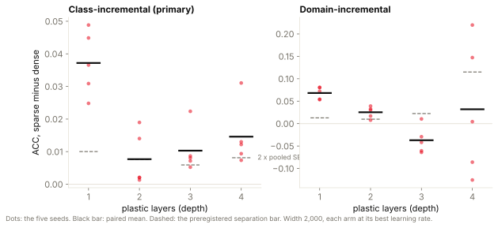
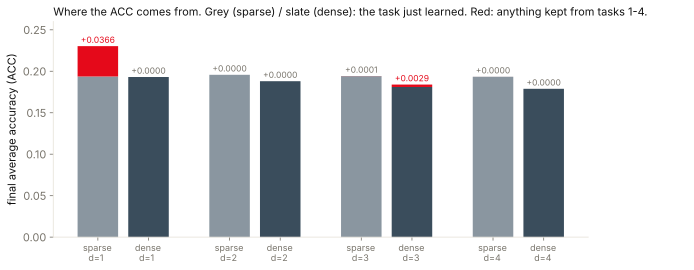
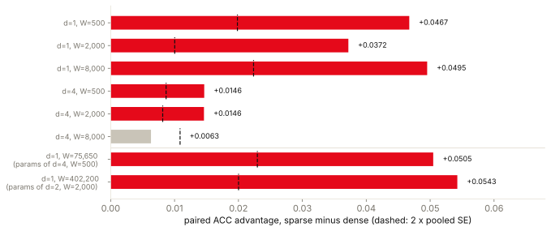

I've been working on a project inspired by how fruit flies learn, specifically whether some of the mechanisms they use could be useful for building neural networks that learn continuously without forgetting what they already know.
One of the problems with continual learning is that a model can learn something new and, in the process, lose much of what it learned before. I wanted to see whether a sparse learning mechanism borrowed from the fruit fly could help with that, and more importantly, whether it would still help as the network got larger.
In an earlier experiment, I found that the sparse model performed better than an otherwise identical model without sparsity. That was with one plastic layer though, so I wanted to see what would happen if I started adding more.
I expected the advantage to disappear by depth 3.
After 152 runs with five seeds each, the sparse model still had an accuracy advantage at every depth I tested up to 4 layers, at width 2,000 in the class-incremental scenario I'd chosen as primary. That wasn't what I predicted, however when I looked at what the models were actually remembering, the result was a lot less encouraging.
By depth 2, even the small amount the sparse model had kept from earlier tasks was gone.
How the model works
The project originally started with the FlyWire connectome of Drosophila, which is a wiring diagram of the fruit fly brain. The FAFB v783 dataset contains 139,255 proofread neurons and 2,700,513 connections with at least five synapses. I loaded the released tables and checked their structure against the published numbers in the earlier work.
This particular experiment doesn't use that wiring diagram though. Instead, I'm borrowing a learning mechanism from a part of the fly brain called the mushroom body.
The idea is fairly simple. Inputs are expanded into a larger population of neurons through fixed, sparse, random connections, and only the most active neurons are allowed to remain active. The output layer then learns using a local three-factor learning rule rather than backpropagation.
In my implementation, each expansion unit receives 12 inputs, and the connections are fixed throughout training. I use k-winners-take-all, or k-WTA, to keep only 5% of the units active. At width 2,000, that means 100 active units.
To see whether this actually helps, I compare it against an identical model with k-WTA removed. Both models have the same projections, widths, learning rules, seeds, and training budgets. The only difference is whether that sparsity mechanism is enabled.
I call them the sparse and dense models.
The benchmark is split-MNIST, where the model learns the ten handwritten digits across five tasks, with two digits introduced in each task. The tasks are learned sequentially, and at test time the model doesn't get told which task a digit belongs to.
So if it learns to recognize 0 and 1, then learns 2 and 3, it still needs to recognize 0 and 1 afterward.
This is where forgetting becomes a problem.
Adding more layers
The actual mushroom body has one plastic layer, from Kenyon cells to output neurons. It doesn't provide a learning rule for the additional hidden layers I wanted to test, so I needed another way to train those.
I used direct feedback alignment, which sends the output error to each hidden layer through a fixed random matrix. Those matrices are never trained, and the model doesn't use a backward pass or copied weights.
This keeps the updates local, but it's important to distinguish this from what the fruit fly actually does. At depth 2 and above, I'm testing a combination of sparse expansion, a local learning rule, and direct feedback alignment. I'm not claiming that fruit flies use this deeper architecture.
The experiment covers depths 1 through 4 at width 2,000, along with a separate width experiment at 500, 2,000, and 8,000 units for depths 1 and 4.
I also tested two different continual learning scenarios.
In class-incremental learning, the model has to identify which of the ten digits it's looking at. In domain-incremental learning, it sees the same sequence of digit pairs, but only has to determine whether a digit is even or odd. Neither scenario provides the task identity during testing.
Class-incremental was the primary experiment, which I decided before running anything.
Both sparse and dense models were tested with learning rates of 0.002, 0.01, 0.05, and 0.25, and each was evaluated using its best rate in each configuration.
I also included four MLP baselines: joint training, experience replay with 200 stored examples, EWC, and naive sequential training. These are a different architecture, with different layer and parameter counts, so they aren't directly matched comparisons with the fly-inspired models.
The entire grid ran on September 13, 2026. It took 52.9 minutes of measured runtime, with the fly models running on an RTX 5070 and the baselines using four CPU cores. Every model received 3 epochs per task.
That training budget is important because the absolute accuracy numbers shouldn't be compared directly with published split-MNIST results.
What I expected
Before running the experiment, I committed five hypotheses and recorded the hash of the preregistration in every results file.
My main prediction, H1, was that the sparse model would eventually stop having a measurable advantage over the dense model as I added layers. I expected that to happen at depth 3, and the hypothesis would be supported if it happened at any depth up to 4.
I defined what counted as an advantage beforehand. The sparse model needed a mean accuracy difference greater than twice the pooled standard error, and it needed to outperform dense in at least 4 of 5 seeds.
If it met both conditions at every depth, the hypothesis would be falsified.
The other predictions covered loss of plasticity, how the baselines should behave, width scaling, and whether the new code could reproduce my earlier one-layer results.
I wanted to establish these criteria before looking at the results because otherwise it would be easy to decide afterward what counted as success.
What happened when I added layers
The first result surprised me because the sparse model passed the separation test at every depth in the primary class-incremental experiment.
At width 2,000, these were the differences in average accuracy between sparse and dense:
| Depth | Sparse advantage | Threshold | Seeds ahead |
|---|---|---|---|
| 1 | +0.0372 | 0.0100 | 5 / 5 |
| 2 | +0.0077 | 0.0076 | 5 / 5 |
| 3 | +0.0103 | 0.0059 | 5 / 5 |
| 4 | +0.0146 | 0.0081 | 5 / 5 |
The depth advantage figure shows the individual seeds and the threshold each model needed to clear.

Every depth passed, which means my primary hypothesis was falsified. I predicted that the advantage would disappear by depth 3, but it was still there at depth 4.
However, the size of the advantage dropped by a factor of 4.8 between depth 1 and depth 2, going from +0.0372 to +0.0077. After that, it stayed roughly flat.
The depth-2 result also only cleared the threshold by 0.0001, which is technically enough under the criteria I established, but it's an extremely small margin.
I think the more interesting part came when I looked at what was actually contributing to the accuracy.
What the models actually remembered
The main accuracy metric, ACC, averages performance across all five tasks after the model finishes learning the last one.
The problem is that a model can get a higher score for two different reasons. It might remember more of the earlier tasks, or it might simply be better at the most recent task.
Those are very different outcomes for a continual learning system.
After seeing the results, I separated the final accuracy into the contribution from the last task and the contribution from everything learned before it. This wasn't part of the preregistration, so it doesn't change the original hypothesis verdict, but it changes how I interpret the result.
At depth 1, the sparse model had an average accuracy of 0.2303, with 0.0366 coming from the earlier tasks. The dense model had a retained contribution of 0.0000.
That means the sparse model was actually remembering some of what it learned, and that was responsible for its advantage.
At depths 2 through 4, the sparse model's retained contribution dropped to between 0.0000 and 0.0001.
The retained accuracy figure makes the difference pretty clear. The contribution from earlier tasks is present at depth 1, but almost completely disappears once additional layers are introduced.

At depth 4, the sparse model's final accuracies on the earlier four tasks were 0.0001, 0.0000, 0.0000, and 0.0000.
It was still outperforming dense, but that was because it scored 0.9670 on the most recent task compared with 0.8941 for dense.
So the sparse mechanism still provided an accuracy advantage, but almost none of that advantage came from remembering earlier tasks.
For a project investigating continual learning, that's a pretty important distinction.
The other learning scenario
The domain-incremental experiment gave a different result.
At depth 3, dense actually outperformed sparse by 0.0370, with sparse winning only 1 of 5 seeds.
At depth 4, sparse had a positive mean advantage of +0.0319, but the individual differences ranged from -0.1257 to +0.2198. The separation threshold was 0.1150, which the result didn't clear.
There's a lot of variance in that last result, so I wouldn't interpret it as evidence that the models are equivalent.
What's interesting is that if I had made domain-incremental the primary scenario, my prediction would have been supported at exactly depth 3.
But I didn't. I chose class-incremental before the experiment, and that result falsified my hypothesis. I don't think it makes sense to change which result counts afterward just because another one happens to match my prediction.
It does show that the sparse advantage behaves differently depending on the learning problem, which is something I'd want to investigate further.
Could the models still learn new things?
There's another problem in continual learning called loss of plasticity, where a model gradually loses its ability to learn new tasks.
That's different from forgetting. A model might forget everything it learned before while still being perfectly capable of learning whatever you give it next.
I predicted that loss of plasticity would increase with depth.
In class-incremental learning, the sparse model's mean accuracy on new tasks was 0.9832 at depth 1 and 0.9831 at depth 4.
So despite forgetting almost everything from earlier tasks, it was still learning new ones.
The measured change in loss of plasticity was +0.0006 in class-incremental and +0.0003 in domain-incremental, compared with my preregistered threshold of 0.10.
Both results fell into the middle category I had defined beforehand, meaning the hypothesis was neither supported nor falsified.
Across the sixteen combinations of depth, model, and scenario, loss of plasticity was declared in only one, the dense model at depth 4 in domain-incremental learning.
To be fair, five tasks isn't a particularly long sequence for investigating loss of plasticity. I wouldn't take these results as evidence that the models could continue learning indefinitely.
What I can say is that in this experiment, forgetting was a much bigger problem than the ability to learn something new.
What happened when I made the networks wider
I also wanted to know whether the sparse advantage would increase as the network got wider.
At depth 1, the advantage was +0.0467 at width 500 and +0.0495 at width 8,000. That satisfied my preregistered width hypothesis, which compared those two endpoints.
However, at width 2,000 the advantage was +0.0372, which was actually lower than both.
The width figure shows that at depth 1 the advantage stays roughly flat across a 16-fold increase in width rather than consistently increasing.

The largest model I tested was depth 4 at width 8,000, and interestingly it was the only configuration in the class-incremental grid that failed the separation test.
Its sparse advantage was +0.0063 against a threshold of 0.0109.
That could be interesting, but it's one configuration with five seeds. I don't think there's enough evidence to say that making the network wider eventually removes the advantage.
There's also a complication with adding layers because it increases the number of trainable parameters.
At width 2,000, the models went from 20,010 trainable parameters at depth 1 to 12,026,010 at depth 4.
So I needed to check whether the smaller advantage was actually caused by depth, or whether it was just a consequence of changing the parameter count.
I tested this by taking a depth-1 model and making it wide enough to match the trainable parameter count of a deeper model.
Two of these controls fit on my GPU. They matched depth 4 at width 500 and depth 2 at width 2,000.
Both retained the larger depth-1 advantage, scoring +0.0505 and +0.0543.
That suggests the reduction in advantage is caused by depth rather than parameter count in those two comparisons.
Unfortunately, the other six controls weren't feasible on my hardware, so the parameter-count question remains unresolved for the rest of the experiment, including the entire domain-incremental sweep.
How the baselines performed
I wanted to make sure that the results weren't simply caused by the models becoming impossible to optimize at greater depths.
The baseline results were fairly consistent.
Joint training outperformed experience replay, and experience replay outperformed naive sequential training, at every depth in both scenarios.
In class-incremental learning, joint training scored 0.9603 at depth 1 and 0.9598 at depth 4, so the ceiling barely changed.
That supports the baseline optimization check, although the baselines use a different architecture and don't establish the same thing for the fly-inspired models.
Experience replay was also much better at continual learning than either of my sparse or dense models.
At depth 4, replay achieved 0.7156 with a buffer of 200 examples, compared with 0.1934 for the sparse model.
That's a pretty substantial difference, and I don't think the sparse-versus-dense result should distract from it.
The refactored code also reproduced the earlier depth-1 experiment to within 8.2e-05, against an allowed difference of 0.005, so that check passed too.
There were some failures during training though. Eight of the 144 core grid cells produced non-finite weights, all at depth 4 with learning rates of 0.05 or 0.25. Seven were dense and one was sparse.
I left those cells missing rather than changing the model or rerunning them with different settings, as required by the stopping rule I established before the experiment.
The learning-rate selection uses the rates that completed successfully, and none of the failed cells were counted as zero.
What I think of the results
I went into this experiment expecting to find a depth where the sparse learning mechanism stopped providing an advantage.
That didn't happen in the primary experiment. It outperformed dense at every depth from 1 to 4 at width 2,000, and passed the separation criteria I had established beforehand.
So my primary prediction was wrong.
But I think the more important result is that the nature of the advantage changed almost immediately.
At depth 1, the sparse model was remembering some of the earlier tasks, which is what originally made the mechanism interesting to me. At depth 2 and beyond, that retention was almost completely gone.
It could still learn new tasks, and it could still outperform dense on average accuracy, but it wasn't doing what I actually wanted from a continual learning system.
I also don't know yet why adding the second plastic layer causes retention to disappear. Separating the accuracy into its different contributions tells me what's happening, but it doesn't explain the mechanism responsible.
And since the deeper models use direct feedback alignment, I can't attribute the result entirely to the original fly-inspired mechanism.
There are quite a few limitations here. I tested one benchmark, one task order, a 3-epoch training budget, one sparsity setting, one learning-rate grid, and five seeds. I didn't test anything beyond depth 4, and most of the parameter-matched controls couldn't run on my hardware.
I also haven't compared the local learning rule against backpropagation using the same architecture, so I can't say whether it remains competitive with backpropagation as depth increases.
That's what I want to investigate next in Phase 3.5.
I think the biggest thing I've taken away from this experiment is that average accuracy alone can be misleading when investigating continual learning.
The sparse model maintained an advantage, which initially looked like a positive result. But once I looked at how much of that accuracy came from earlier tasks, it became clear that the model was still forgetting almost everything.
For now, I have a mechanism that continues to learn new things and maintains a small accuracy advantage over its dense control, but keeps only a little earlier learning even at one layer, and none once I add more.
That's a useful result, even if it wasn't the one I was hoping for.
Running the experiment
The repository contains the preregistration, all 152 results JSONs, the hypothesis evaluation code, and REPORT_DEPTH.md with the full tables.
The README has the environment setup, and you can reproduce a cell of the experiment with:
.venv/Scripts/python -m continual.run --config fly-sparse-local \
--benchmark split-mnist --scenario class --seeds 0 1 2 3 4 --epochs 3 \
--n-tasks 5 --depth 4 --width 2000 --lr 0.002 --device cuda --threads 4 \
--prereg preregistration/2026-09-13-depth-scaling.md \
--out-dir results/continual/depth-scalingTo evaluate the preregistered hypotheses:
.venv/Scripts/python -m continual.hypotheses \
--results-dir results/continual/depth-scaling \
--out results/continual/depth-scaling/hypotheses.jsonAnd to run the tests:
.venv/Scripts/python -m pytest tests/test_continual.py -qOn Mac or Linux, use .venv/bin/python instead. The results are committed under results/continual/depth-scaling/, along with the figures; the full report is REPORT_DEPTH.md at the repo root.
The project is available at github.com/ninjahawk/fruit-fly.